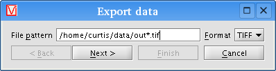
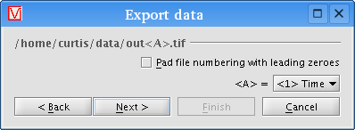
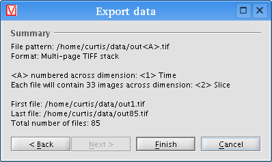

VisBio can export data to different formats on disk. To export the current data object, click the "Export >" button on the Data panel, then choose "Save to disk..." from the popup menu (or choose "Export data..." from the File menu). A dialog box titled "Export data" will appear:

Select the folder where the exported data should be stored by clicking the "Choose..." button.
Enter the file pattern that defines how your files will be named. Place asterisks (*) where the file numbering should occur. In the example above, the pattern indicates that the data will be numbered out1.tif through outX.tif, where X is the maximum value of the numbering's associated dimensional axis (e.g., time points).
Also, choose the appropriate output format from the dropdown list box on the right.
Click the "Next" button to proceed. You will see a dialog like the following:

The first line (in our example, "/home/curtis/data/out<A>.tif") indicates the file pattern, with asterisks replaced by letter tags. For each letter tag, you'll notice a dropdown list box allowing you to map that letter to one of the data's dimensional axes. In our example, <A> gets mapped to Time, meaning that each file will contain one timestep of the data.
The "Pad file numbering with leading zeroes" checkbox is useful if you want the files to be numbered with fixed width integers. For example, if our example data contains 85 timesteps, checking the box results in filenames out01.tif through out85.tif, instead of the default out1.tif through out85.tif.
When you have everything configured to your liking, click the "Next" button again to continue. You'll see a summary screen like this one:

Finally, click the "Finish" button and VisBio will begin exporting your
data.